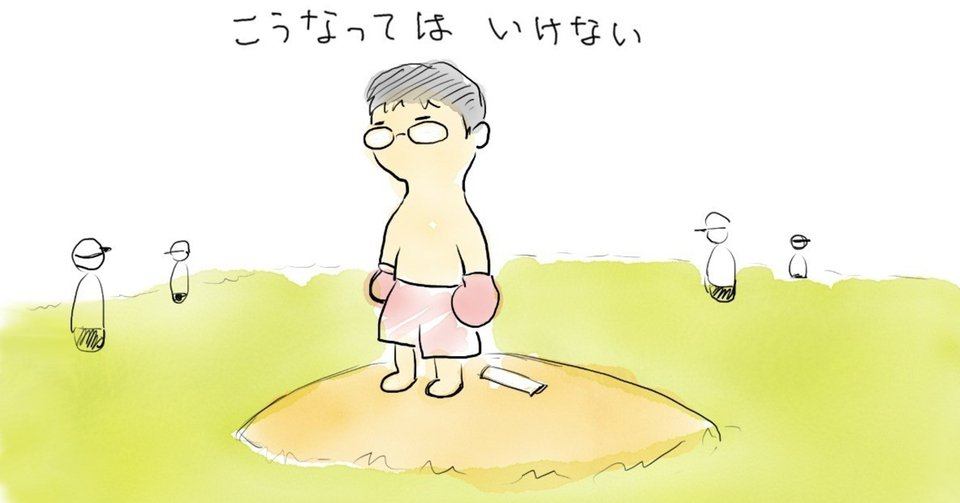
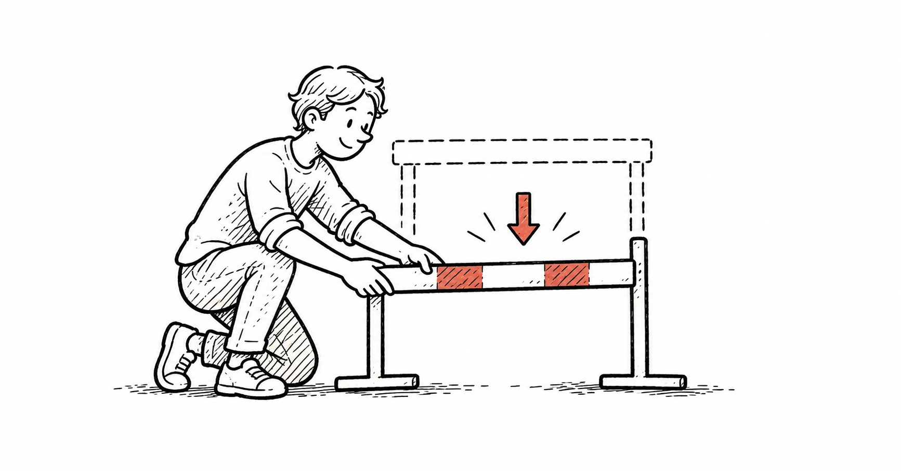
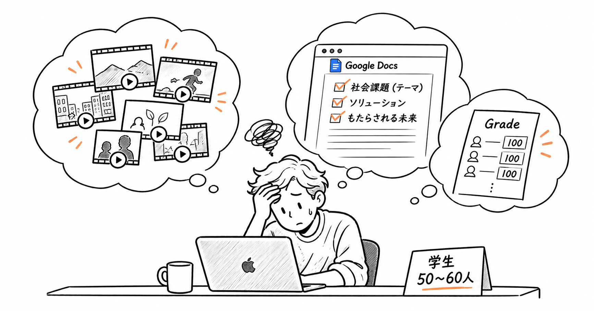

AI使って楽したり
楽しくなったり
自己紹介
ノムラ
株式会社LegalOn Technologies
デザイナー

まずは古参ムーブ
2018
InHouseDesigners vol. 3 に参加

前回のチョットAI会
全然、
チョットじゃない。
今日は、もっと気軽な使い方の話。

このLTから持ち帰ってほしいこと
無いです。
「へー」「ふーん」と思ってもらえたら十分です。
今日の話
しんどい作業が、
生きがいになるまで。
大学で非常勤講師
全8回の
ワークショップ
社会課題を見つける
解決策を考える
動画で発表する

成績をつけるのがしんどい
50〜60人
評価の中心はレポート。
動画の出来に応じて加点。

3年目から
AIに採点を任せる
- 過去の採点から
基準案を作る - 講師が
基準を直す - その基準で
AIが採点する
採点基準の一部
何を見て点をつけるか
| 項目 | 配点 | 見るポイント |
|---|---|---|
| アイデアの質・広がり | 0〜2点 | リサーチや課題設定とのつながり |
| 解決策の価値 | 0〜3点 | 誰の行動がどう変わるか |
| リサーチの活用 | 0〜4点 | 調査から課題と解決策を導けているか |
重視したこと 学生同士の視点がデザインに反映されているか
ここでもう一捻り
「講師が読んで嬉しい感想を
ピックアップして」
学生の感想 · 楽しかった系（抜粋）
「自分のアイデアが他の人の意見によってさらに面白いものに発展したりする過程がとても楽しく、毎週の授業が楽しみでした。」
学生の感想 · 価値観ゆさぶった系（抜粋）
「今までは何を作るかばかり考えていましたが、それが人や社会に与える影響に目がいくようになりました。」
学生の感想 · なんかジャストミート（抜粋）
「こういう経験がしたくて日本に来たので、留学して本当によかったと感じました。」
採点の先にあったもの
もはやこれ、
生きがいです。
真面目な話
「それAIで簡単に
できるんでしょ」
そんな時代に、どうやって作る気持ちを保つか。
最後に古参ムーブ
小さなコミュニティで
LTして、褒めてもらおう。
お聞きいただき、ありがとうございました。